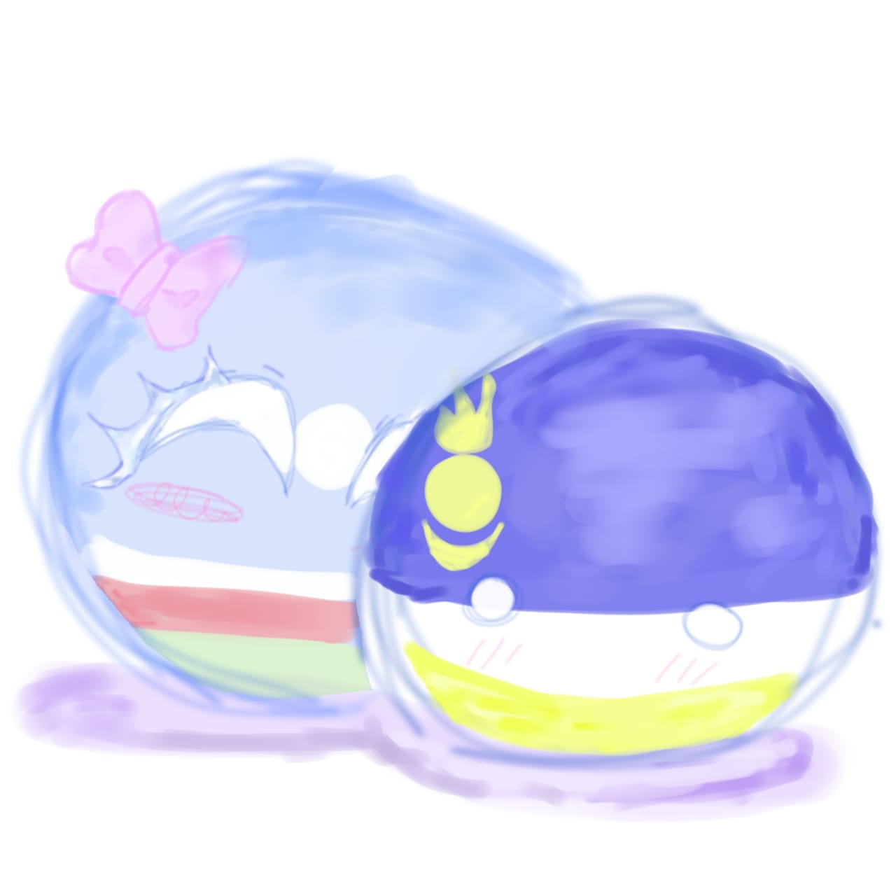

Здесь можно увидеть мои рисунки, выполненные в ибисе!
Например, я рисую в стиле Countryballs, либо в стиле Countryhumans.
Countryballs — интернет-комиксы, персонажами в которых выступают различные страны, изображённые в виде шаров, окрашенных в цвета какого-либо государственного флага.
Countryhumans — фэндом, серия человекоподобных персонажей, олицетворяющих различные страны мира
